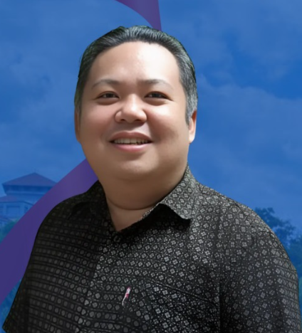

Penyelia Projek

SIR RYAN MACDONELL ANDRIAS
Pensyarah Teknologi Multimedia, Fakulti Komputeran dan Informatik (FKI)
Pakar dalam teknologi interaktif, gamifikasi, adaptive learning, serta aplikasi Augmented Reality (AR) dan Virtual Reality (VR). Penglibatan aktif beliau menonjolkan komitmen terhadap inovasi digital yang memberi manfaat kepada pendidikan dan komuniti.
Kumpulan 13
Pelajar Tahun 3 mengambil bidang Teknologi Multimedia di Fakulti Komputeran dan Informatik, Universiti Malaysia Sabah, Kampus Antarabangsa Labuan.
ELPI ANGELIKA LASIUS
BI23110280
NURAIDILAHVILENTENA BINTI SIMON
BI23110102
DOMINIC MATHEUS
BI23110011
MOHD FAUZIE BIN KAMARUDIN
BI23110328